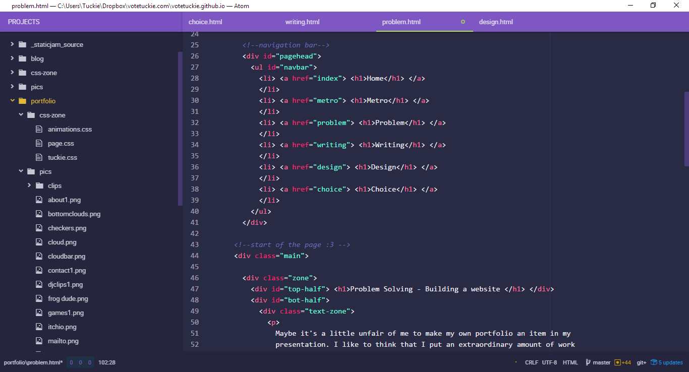

Problem Solving - Building a website
Maybe it's a little unfair of me to make my own portfolio an item in my presentation. I like to think that I put an extraordinary amount of work into it. Web design is something I had no experience in whatsoever before deciding to make my own website for this year's portfolio. In order to explain my learning, I'll try to walk through the process it took me to build the site you're looking at today.
Since we did online portfolios last year I had been dreaming up making my own site for a presentation, from scratch. The "Google Sites" platform last year was fairly limiting, and while they updated it this year, most of the templates looked the same to me, and were pretty uninteresting. I decided that I was going to have to make the site myself if I wanted it to look nice. The only problem was that I had never worked with HTML or web development before.
Coding in HTML is fairly straightforward, and it's popular enough to where if you have an issue someone online has already asked and gotten an answer, at least for the basic stuff. A few of my friends online have had some web development experience, and I was able to get help from them as well. I've spent about two and a half months on this site, and have built it to work like a template I can use for a more personal portfolio for games and my other work.
For the uninitiated, HTML is probably one of the worst methods of coding invented, but since it's the basis of the web you have to just deal with it. Everything needs to be inside of these little "tags", < header> some text , for example could be the header at the top of the page. While that in it of itself is simple, there are hundreds of different "tags" and basically none of them do anything different from the rest. I could put my header in a footer tag, and as long as I apply the same style settings they would look and act the same. Since there is arguably no difference between each tag, other than visual clarity for having a name, I've just resorted to calling everything by a "div" which is basically a catch-all for anything you would want to put on a website. In addition to a tag, you can give each element it's own class and id.
A mess of "tagging".
Anything "visual" with websites isn't actually handled through HTML. That, of course, has to be it's own language, CSS. In order to give anything on screen a shape, or color, or animation, or make it properly spaced I need to adjust that all through CSS. Depending on what part of the screen the item is, I assign each div a class or id. The text box you are reading now has an id of "text-zone", which is in the larger white background div named "bot-half". Nesting all these elements within each other and giving them unique properties is what makes the page look as if it isn't just text on a white screen.

What the home page looks like without CSS
Right now, as of writing this the site is sitting at about 1350 lines of code (just for the portfolio pages). Most of that is made up of these little open tags and closing tags. All in all it was fun and interesting to experiment with a new language, as frustrating as this one is.